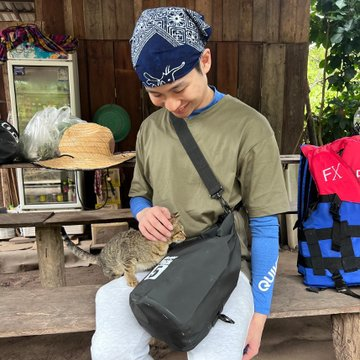

Dr Nicholas Hang
2025 cohort
I chose Preventive Medicine because I want to impact health beyond individual patient encounters—focusing on populations and communities instead. The diversity of public health and occupational medicine is one of the most appealing aspects of this field. As I begin this program, I’m already seeing opportunities that exist well outside the traditional hospital setting, from workplace health assessments and environmental monitoring to policy development and community health programs.
The curriculum ahead covers epidemiology, biostatistics, health policy, and health promotion across various real-world applications. I’m looking forward to gaining experience in corporate settings, government agencies, research environments, and community organizations—each offering different perspectives on how to improve population health.
Early in the program, I’m already working with management teams, policymakers, clinicians, and researchers, which is improving my ability to communicate across different professional contexts. The collaborative nature of this work is both challenging and engaging as we tackle the complex factors that influence health outcomes.
I’m excited about the variety of roles available in preventive medicine and feel this program is setting me up well to address public health challenges in whatever setting I eventually choose. For anyone interested in population health, this program provides solid training and exposes you to career paths you probably haven’t considered. The field offers more options than most people realize.